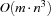

11.5 Solving Hard Scheduling Problems
In this section we tackle more difficult scheduling problems. To this aim we will also develop a new serializer.
We consider two problems in this section. Both are used as standard benchmark problems for scheduling. The first one is called ABZ6 and was introduced in [ABZ88]. The second one is the famous MT10 and was introduced in [MT63]. MT10 was considered as an especially hard problem for several years. It took more than 25 years that the optimality of a found makespan was proven [CP89].
These problems belong to the class of so-called job-shop problems (see [GJ79] or a good text book on scheduling). We slightly simplify the definition for our purposes. A job-shop problem consists of  jobs of tasks. Each job consists of
jobs of tasks. Each job consists of  tasks through
tasks through  such that each task of the job is scheduled on a different (unary) resource. Thus, we have resources. Furthermore, we have the constraint
such that each task of the job is scheduled on a different (unary) resource. Thus, we have resources. Furthermore, we have the constraint  for all tasks of job , i. e. the tasks in a job are serialized. The latter constraints are already known as precedence constraints (see Section 11.1.1).
for all tasks of job , i. e. the tasks in a job are serialized. The latter constraints are already known as precedence constraints (see Section 11.1.1).
11.5.1 The Problem ABZ6
We will consider problem ABZ6 first. The specification is given in *. The problem consists of 10 jobs and 10 resources. We first search for the optimal solution and prove its optimality:
{ExploreBest {Compile ABZ6
Schedule.serialized
Schedule.firstsLastsDist}
Earlier}
The resulting search tree contains 2424 choice nodes. The optimal makespan is 943.
We now only want to prove the optimality of the makespan 943. To this aim we declare a modified problem as follows.
OptABZ6 = {AdjoinAt ABZ6 constraints
proc {$ Start Dur}
Start.pe <: 943
end}
The proof of optimality needs 761 choice nodes.
Hence, the problem ABZ6 seems to be rather easy to solve and we can try our previous bottleneck serializer DistributeSorted. To find the optimal solution and to prove its optimality a search tree is computed which contains more than 1.2 million choice nodes. Therefore, the problem is difficult for our simpler strategies and the gain by our new serializer is dramatic.
But we can do still better. To this aim we introduce a new serializer. This serializer will not serialize one resource after the other as the previous serializer. Instead a resource  is selected first. Then two tasks are selected which are running on and it is distributed with a certain ordering. For the resource selection a criterion is used which combines the global slack and the local slack of each resource. For the task ordering the sets
is selected first. Then two tasks are selected which are running on and it is distributed with a certain ordering. For the resource selection a criterion is used which combines the global slack and the local slack of each resource. For the task ordering the sets  and are computed as shown in the previous section. From these sets two tasks are selected according to a subtle criterion (see [CL94]). After an ordering decision is made by distribution the process is repeated until all resources are serialized. In contrast to the strategy in Section 11.4, a task pair on a resource may be ordered without that the resource which was previously considered needs to be serialized.
and are computed as shown in the previous section. From these sets two tasks are selected according to a subtle criterion (see [CL94]). After an ordering decision is made by distribution the process is repeated until all resources are serialized. In contrast to the strategy in Section 11.4, a task pair on a resource may be ordered without that the resource which was previously considered needs to be serialized.
task-oriented
Thus, we call such a serializer a task-oriented serializer The strategy implemented in Oz is very similar to the one suggested in [CL94].
Since we have to compute local slacks, the serializer has a run time complexity of  in each step. Thus, it is more expensive than the resource-oriented serializer of the previous section. Furthermore, the use of this serializer might result in very deep search trees because we order only two tasks at each choice node. But the presented task-oriented serializer has a very important operational behavior besides the fact that it is used for distribution. While it is computing the local slacks of the resources it additionally employs edge-finding for the task intervals considered during this computation. In this way, the serializer may detect several orderings which must hold by the edge-finding rules presented in Section 11.3. This information is exploited at each choice node by additionally creating the corresponding propagators. Thus, the serializer orders two tasks by distribution and simultaneously adds orderings which are detected deterministically. By this approach the search tree may be reduced dramatically if edge-finding can be applied. As we have seen before, this is the case when the domains are rather narrow, i. e. for example when we want to prove optimality.
Oz provides the serializer Schedule.taskIntervalsDistP which has the described behavior. To prove optimality for ABZ6 we now only need 145 choice nodes.
This serializer is especially designed for proving optimality. Hence, do not use this strategy when you want to find the optimal solution from scratch. If we search for the optimal solution the search tree becomes rather deep (a depth larger than 450) (including the proof of optimality) and the full tree contains more than 47000 choice nodes.
A variant of this task-oriented serializer is especially designed to find good solutions. To this aim Oz provides Schedule.taskIntervalsDistO (see also [CL95]). To find the optimal solution and to prove its optimality with this strategy we need 2979 choice nodes. But be aware that the use of this strategy may also lead to deep search trees which result in high memory consumption.
11.5.2 The MT10 Problem
In this section we tackle the famous MT10 problem (the data specification is *). From the literature we know that 930 is the optimal makespan and we can define a script (compiled from OptMT10, see *) which can be used for proving optimality. The proof of optimality can be done with 1850 choice nodes:
{ExploreBest {Compile OptMT10
Schedule.serialized
Schedule.taskIntervalsDistP}
Earlier}
Note that the depth of the search tree is only 39. This emphasizes the fact that many orderings can be determined by edge-finding which is employed by the task-oriented serializer.
To find the optimal solution we better use the serializer Schedule.firstsLastsDist:
{ExploreBest {Compile MT10
Schedule.serialized
Schedule.firstsLastsDist}
Earlier}
The full search tree to find the optimal solution and to prove its optimality contains 16779 choice nodes and has depth 91.